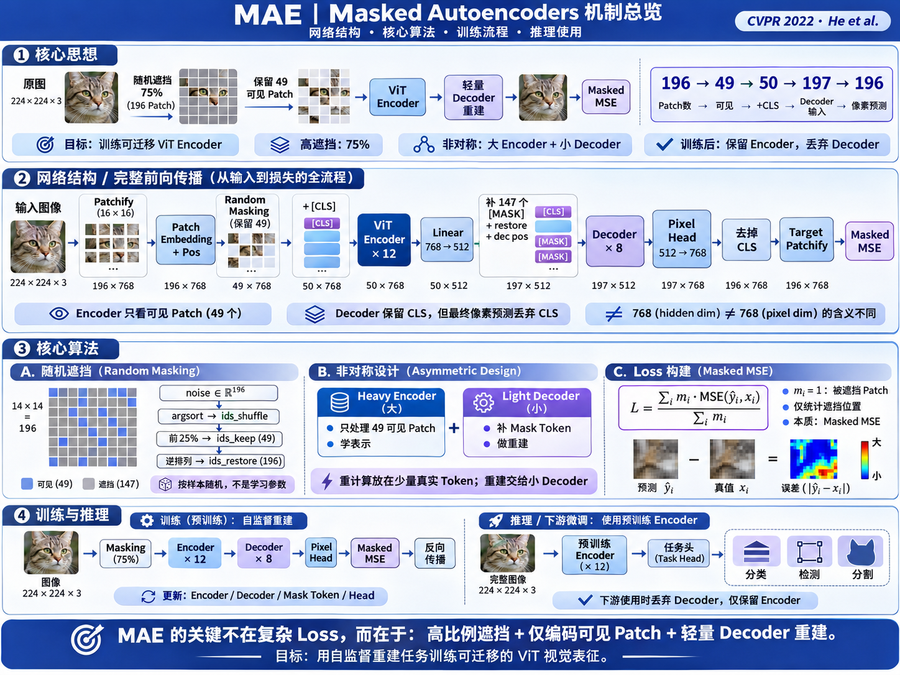

MAE Masked Autoencoders
已掌握 ResNet、Transformer、ViT 后，真正需要理解的不是另一遍 QKV，而是：如何用遮挡图像构造监督信号，让 ViT 学会有用的视觉表示？

MAE 要解决什么问题？
从“设计网络”转向“设计一个能训练网络的任务”。
模型可以直接利用输入中的完整像素预测原像素，重建任务无法有效约束它学习上下文。
相邻图像块高度相关，缺少部分内容可能靠附近纹理就能近似补全。
只见约四分之一 Patch，需要借助更广的结构关系；但不保证一定学到语义，必须由实验验证。
高比例随机遮挡（如 75%）
非对称 Encoder–Decoder
49 Token
197 Token
一张图如何完整走到 Loss？
所有节点的形状和语义一次明确；后面逐模块拆开计算。
[B,3,224,224]、Patch 16×16、遮挡 75%、Encoder 宽度 768、Decoder 宽度 512。Encoder 特征宽度
ViT-Base 的 Token 隐藏维度 D_enc=768，是网络结构配置。
Decoder 特征宽度
重建网络宽度 D_dec=512，是可改的超参数，不代表 512 个像素。
一个 Patch 的 RGB 数
16×16×3=768，是像素预测维度。恰好与 ViT-B 隐藏维度相同。
2.1｜完整 Tensor Shape 表（含 Batch）
| 步骤 | Tensor Shape | 具体转换 / 参数 | 谁会继续用它 |
|---|---|---|---|
| RGB Image | [B,3,224,224] | 输入图像 | Patch Embedding；另作为 Target 来源 |
| Patch Embedding | [B,196,768] | 16×16×3 → 768 的可训练投影，加固定 2D Pos | Masking |
| Random Masking | [B,49,768] | 保留 49 个 Token；产生 mask [B,196]、ids_restore [B,196] | Encoder / Decoder / Loss |
| CLS + Encoder | [B,50,768] | +1 CLS，12 层 ViT-B Encoder | Decoder Embed |
| Decoder Embed | [B,50,512] | Linear 768→512，含 CLS | Restore |
| 补位与 Restore | [B,197,512] | 49 Visible + 147 Mask + 1 CLS，恢复空间顺序并加 Pos | Decoder |
| Decoder ×8 | [B,197,512] | 16 heads，每头 32 维，MLP 512→2048→512 | Head |
| Pixel Head | [B,197,768] | Linear 512→(16×16×3) | 删除第 0 个 CLS 输出 |
| Patch 预测 | [B,196,768] | pred = head[:,1:,:] | MSE |
| Pixel Target | [B,196,768] | 原图 patchify；可选按 Patch 归一化 | MSE |
| 每块误差 → 总 Loss | [B,196] → [] | 每 Patch 按像素均值，再只汇总 Mask=1 的 Patch | 反向传播 |
为什么遮挡？Patch 又怎样回到原位置？
区分“图像信息被移除”和“Decoder 用占位 Token 填补缺口”。
ids_restore 恢复完整网格。实验 A｜224×224 图像实际保留多少 Patch？
下图为程序绘制的教学场景，不是预训练网络的重建输出。拖动遮挡率、换随机种子。
3.1｜为什么 MAE 不把 Mask Token 一开始送 Encoder？
实验 B｜4×4 小图：亲手追踪 ids_keep / ids_restore
随机生成一组排列，切换 3 个阶段；所有索引对应真实置换逻辑。
zᵢ = PatchEmbed(xᵢ)+PosEnc(i)，所以可见 Token 即使被打乱，仍携带原来的空间位置线索。
Mask Token 初始共享同一个可训练向量，通过 Restore 分配到缺失位置，再加入每个位置的固定 2D Pos。
| 常被混为一谈的 Mask | 发生在何处 | 实际含义 |
|---|---|---|
| Random Patch Mask | 输入数据选择 | 0=保留、1=移除；让 Encoder 根本看不到被移除 Patch |
| Mask Token | Decoder 输入 | 可训练共享占位向量，用于缺失位置的特征计算 |
| Loss Mask | 计算像素误差 | 只汇总曾经被移除的 Patch（数值 1 的位置） |
| Causal Attention Mask | QKᵀ 后的 Attention logits | 屏蔽未来位置；原始 MAE 不使用这种上三角 Mask |
Encoder 已经会 ViT，为什么还有 CLS？
保留 ViT 的原理，但不忽略 CLS 在 MAE 内到底做了什么。
4.1｜CLS 的全程去向：它没有消失，只是没有像素监督
官方实现保留 ViT 的 CLS 参数与接口，使预训练 Encoder 易于复用。它并非为了每张 Mask 图产生类别预测。
没有单独的 CLS 像素 Loss，但 CLS 可在 Self-Attention 中影响其他 Token，因而可能通过重建误差接受间接梯度。
从“只预测 Patch”的数学任务看不必依赖 CLS。不同实现可不用 CLS 或采用平均池化，但不能把官方实现误画成完全无 CLS。
Decoder 如何从缺失位置预测像素？
本章核心：为什么 768→512、Mask Token 如何携带位置、QKV 如何形成重建特征。
5.1｜为什么要从 768 降到 512？为什么又输出 768？
Encoder feature
Decoder feature
Pixel patch
Encoder feature
Decoder feature
Pixel patch
P×P×C 决定，而不由 Encoder 的隐藏宽度决定。5.2｜被遮挡位置的 Q/K/V 到底来自哪里？
实验 C｜选择一个 Mask Query，看到真实 Softmax 权重怎样变化
使用固定的 2 维玩具特征，设 Wq=Wk=Wv=I，按 Attention 公式真实计算；不冒充已训练 MAE 的注意力权重。
| 位置 | 可见性 | 输入 z = [z₁,z₂] |
|---|---|---|
| V₁ | 可见 | [1.20, 0.30] |
| M₂ | MASK | [0.20, 1.10] |
| V₃ | 可见 | [0.80, 0.70] |
| M₄ | MASK | [-0.20, 0.70] |
Restore 恢复的是 Token 在序列中的位置；此时缺失处仍只是特征占位，不是 RGB 真值。
它提供信息交互的路径；通过像素 MSE 反复训练，网络参数才逐渐学习如何推断缺失内容。
Head 到底输出什么？Loss 如何逐项构建？
从 Decoder 特征映射到每块 RGB，再严格执行官方 Loss 聚合顺序。
6.1｜Loss 不是把预测图和原图随便减一下
实验 D｜真正计算一次 Masked MSE 和梯度
简化为 4 个 Patch、每个 Patch 2 个像素。可修改预测值；公式和结果实时同步。
| Patch | mask | 预测 − 真实 | Patch 内部 MSE | 参与总 Loss? |
|---|
6.2｜Pixel Target 是否一定是原始 [0,1] RGB？
从原图中 patchify 生成目标，与预测进行平方误差比较。图像预处理和具体像素数值范围由训练数据流水线决定。
官方实现支持 norm_pix_loss：每个 Patch 单独计算均值和方差，对目标像素标准化，再比较 MSE。它不是对预测图像做分类 Softmax。
只监督遮挡 Patch，为什么 Encoder 也在学习？
把前向数据依赖和反向梯度路径连成同一张图。
7.1｜一张图分清楚哪些参数更新，哪些不会
7.2｜一次预训练迭代，真实发生的步骤
数据增强、输入组织为 [B,3,224,224]。
产生 visible、mask、ids_restore。
包含 CLS，得到 [B,50,768]。
恢复 196 Patch + CLS，Decoder ×8。
Target 来自原图；Masked MSE 为标量。
更新 Encoder、Decoder、Head、Mask Token 等。
查看与官方实现对应的核心伪代码（默认折叠，不取代图解）
省略了 batch 维展开、Target 可选标准化、混合精度、调度等工程细节；流程与原模型主要函数一致。
训练完成之后，保留什么？论文真正证明了什么？
把代理任务与最终任务分开，避免把像素补全理解成视觉理解本身。
8.1｜为什么补像素可能学到可以检测物体的特征？
Encoder 需要把有限的可见区域组织成对推断其他区域有用的特征。
纹理、轮廓、物体部分和远距离空间关联，都可能帮助降低像素重建误差。
这种代理任务不等价于语义学习；真正证明表征是否有用的是下游分类、检测、分割表现。
8.2｜论文消融，应该怎样看，而不是只看排行榜？
| 论文验证方向 | 需要观察的变化 | 能够支持什么结论 | 不能直接推断什么 |
|---|---|---|---|
| Mask Ratio | 低遮挡、中遮挡、高遮挡的下游结果 | 较高遮挡在原设置中形成更有效任务 | 75% 对所有领域都最优 |
| Encoder 是否处理 Mask Token | 计算量、预训练速度、迁移性能 | 可见块 Encoder + 小 Decoder 在原设置中有效高效 | 实际 GPU 速度能按 Attention N² 比例精确加速 |
| Decoder 规模 | 深度、宽度改变时的迁移结果 | 重建网络不必等于大 Encoder | Decoder 越小必然越好 |
| 像素重建目标 | 原始 / 归一化像素目标等 | 简单像素回归足以构建有效自监督信号 | 低像素 MSE 必然获得最佳语义表示 |
| 下游迁移 | Linear Probe、End-to-End Fine-tune、检测/分割 | Encoder 特征具有一定可迁移性 | 所有任务都优于所有后续方法 |
实验 E｜Token 减少后，Attention 的 N² 关系有多大？
只比较单层注意力矩阵元素数，不把它当成完整训练加速比。
8.3｜你应该带走的四个判断
它不改变 Self-Attention 的基本公式，而改变输入选择、训练目标和重建支路。
目标是获取好特征，而不是部署时一直重建图像。
不能因为最终只要 Encoder，就忽略预训练中它们的作用与梯度。
后续自监督方法（如 DINO 系列）沿着不同监督目标发展，不代表 MAE 的像素重建思想没有价值。